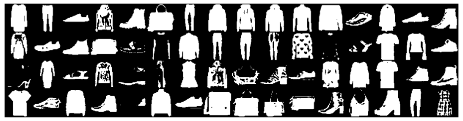
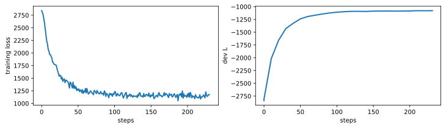
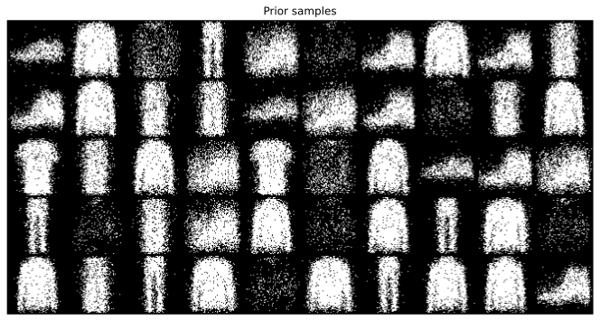
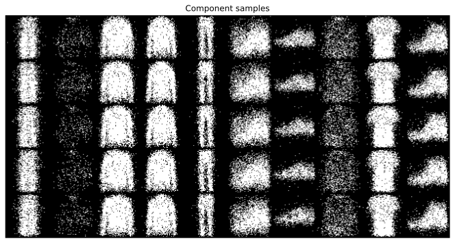
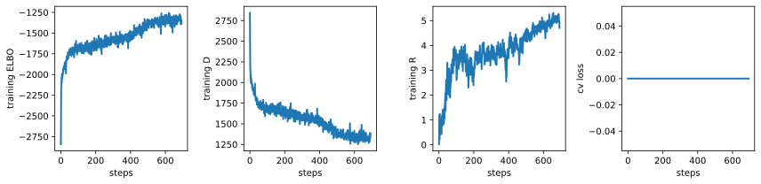
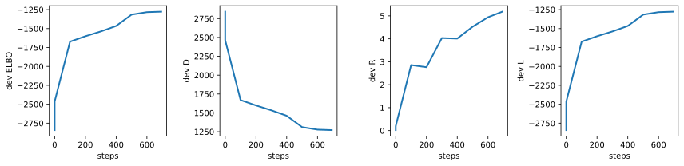
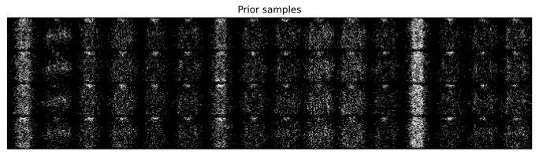
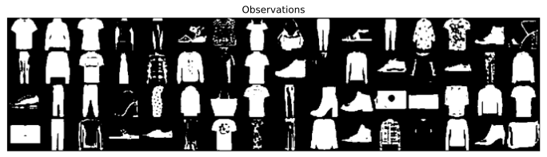
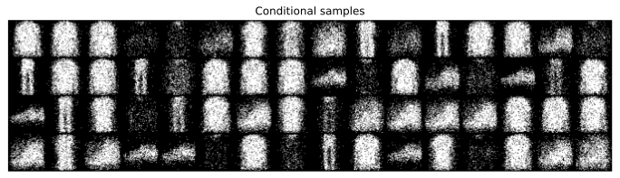

import torch
import numpy as np
import random
import matplotlib.pyplot as plt
import torch.nn as nn
import torch.nn.functional as F
import torch.distributions as td
from itertools import chain
from collections import defaultdict, OrderedDict
from tqdm.auto import tqdm
from IPython.display import set_matplotlib_formats
set_matplotlib_formats('svg', 'pdf') # For having SVG graphics
import matplotlib
matplotlib.rcParams['lines.linewidth'] = 2.0
%matplotlib inlineDPM2 - Variational inference for deep discrete latent variable models
Filled notebook: 

Recordings: Lecture 1.3, Lecture 1.4 & Lecture 1.5
Authors: Wilker Aziz
0. Intended Learning Outcomes
After this tutorial the student should be able to
- parameterise a latent variable model with discrete latent variables
- estimate parameters using exact log-likelihood function (when tractable)
- estimate parameters using neural variational inference
0.1 Setting up
def seed_all(seed=42):
np.random.seed(seed)
random.seed(seed)
torch.manual_seed(seed)
seed_all()1. Data
We are going to use toy image datasets for this notebook. These are fixed-dimensional observations for which encoder and decoders are relatively easy to design. This way we can focus on the aspects that are probabilistic in nature.
from torchvision.datasets import FashionMNIST
from torchvision import transforms
from torchvision.transforms import ToTensor
from torch.utils.data import random_split, Dataset
from torch.utils.data.dataloader import DataLoader
from torchvision.utils import make_grid
import torch.optim as opt
DATASET_PATH = "../../data"
my_device = torch.device("cuda:0") if torch.cuda.is_available() else torch.device("cpu")A helper to binarize datasets:
class Binarizer(Dataset):
def __init__(self, ds, threshold=0.5):
self._ds = ds
self._threshold = threshold
def __len__(self):
"""Size of the corpus in number of sequence pairs"""
return len(self._ds)
def __getitem__(self, idx):
"""
Return corpus_x[idx] and corpus_y[idx] converted to codes
the latter has the EOS code in the end
"""
x, y = self._ds[idx]
return (x >= self._threshold).float(), yFashionMNIST
dataset = FashionMNIST(root=DATASET_PATH, train=True, download=True,
transform=transforms.Compose([transforms.Resize(64), transforms.ToTensor()]))img_shape = dataset[0][0].shape
print("Shape of an image:", img_shape)Shape of an image: torch.Size([1, 64, 64])Let’s make a dev set for ourselves:
val_size = 1000
train_size = len(dataset) - val_size
train_ds, val_ds = random_split(dataset, [train_size, val_size])
len(train_ds), len(val_ds)(59000, 1000)we suggest that you binarize the data in a first pass through this notebook, but as you will see, we can also model the continuous pixel intensities.
bin_data = Trueif bin_data:
train_ds = Binarizer(train_ds)
val_ds = Binarizer(val_ds)batch_size = 64
train_loader = DataLoader(train_ds, batch_size, shuffle=True, num_workers=2, pin_memory=True)
val_loader = DataLoader(val_ds, batch_size, num_workers=2, pin_memory=True)Let’s visualise a few samples
for images, y in train_loader:
print('images.shape:', images.shape)
plt.figure(figsize=(16,8))
plt.axis('off')
plt.imshow(make_grid(images, nrow=16).permute((1, 2, 0)))
plt.show()
breakimages.shape: torch.Size([64, 1, 64, 64])
2. Latent variable models
We will be using NNs to parameterise a latent variable model, that is, a joint distribution over a collection of random variables (rvs), some of which are observed, some of which are not.
We are interested in two random variables (rvs):
- a discrete latent code \(Z \in \mathcal Z\)
- and an image \(X \in \mathcal X \subseteq \mathbb R^D\)
In this tutorial, \(x\) is has a number \(C\) of channels, a certain width \(W\) and a certain height \(H\), so \(\mathcal X \subseteq \mathbb R^{C \times W \times H}\). Because we have fixed \(D = C \times W \times H\), \(\mathcal X\) is finite-dimensional, but this need not be the case in general (for example, in a different domain, \(\mathcal X\) could be the unbounded space of all sentences of arbitrary lenght). We may treat the pixel intensities as discrete or continuous, as long as we choose an appropriate pmf/pdf for each case.
In this tutorial we will look into two types of latent code. A categorical code \(z \in \{1, \ldots, K\}\), and a combinatorial code \(z \in \{0, 1\}^K\), in both cases \(\mathcal Z\) is countably finite, but in general this need not be the case (for example, we could have \(z \in \mathbb N\) or \(z\) be a latent sequence of arbritrary length).
In this tutorial, we specify a joint distribution over \(\mathcal Z \times \mathcal X\) by specifying a joint probability density function (pdf):
\[\begin{align} p_{ZX}(z, x|\theta) &= p_Z(z|\theta)p_{X|Z}(x|z, \theta) \end{align}\]
Here \(\theta\) denotes the parameters of the NNs that parameterise the pmf \(p_Z\) and the pdf \(p_{X|Z=z}\) (for any given \(z\)).
In this tutorial, the prior is fixed, but in general it need not be. We do not have additional predictors to condition on, but in some application domains you may have (e.g., in imagine captioning, we may be interested in a joint for a caption \(y\) and a latent code \(z\) given an image \(x\); in image generation, we may be interested in a joint distribution for an image \(x\) and a latent code \(z\) given a caption \(y\)).
2.1 Prior networks
We begin by specifying the component that parameterises the prior \(p_Z\).
A prior network is an NN that parameterises a fixed prior distribution for the instances in a batch.
class PriorNet(nn.Module):
"""
An NN that parameterises a prior distribution.
For this lab, our priors are fixed, so this NN's forward pass
simply returns a fixed prior with a given batch_shape.
"""
def __init__(self, outcome_shape: tuple):
"""
outcome_shape: this is the shape of a single outcome
if you use a single integer k, we will turn it into (k,)
"""
super().__init__()
if isinstance(outcome_shape, int):
outcome_shape = (outcome_shape,)
self.outcome_shape = outcome_shape
def forward(self, batch_shape):
"""
Returns a td object for the batch.
"""
raise NotImplementedError("Implement me!")Let’s implement two priors.
A product of (uniform) Bernoulli distributions
Here the latent code is a \(K\)-dimensinoal bit vector, you can think of each coordinate of the code as an attribute of the data point. We use a uniform prior per coordinate:
\[\begin{align} p_Z(z) &= \prod_{k=1}^K \mathrm{Bernoulli}(z_k|0.5) \end{align}\]
Uniform (one-hot) Categorical distribution
Here the latent code is the a class from a discrete set \(\{1, \ldots, K\}\), we use a uniform prior over classes:
\[\begin{align} p_Z(z) &= \mathrm{Categorical}(z|K^{-1} \mathbf 1_K ) \end{align}\]
where \(\mathbf 1_K\) is the \(K\)-dimensional vector of ones.
In practice, we can use the “OneHotCategorical” distribution, which wraps Categorical samples around a call to onehot(sample, K).
class BernoulliPriorNet(PriorNet):
"""
For z a D-dimensional bit vector:
p(z) = prod_d Bernoulli(z[d]|0.5)
"""
def __init__(self, outcome_shape):
super().__init__(outcome_shape)
# the product of Bernoulli priors will have Bernoulli(0.5) factors
self.register_buffer("logits", torch.zeros(self.outcome_shape, requires_grad=False).detach())
def forward(self, batch_shape):
shape = batch_shape + self.outcome_shape
# we wrap around td.Independent to obtain a pmf over multivariate draws
# without td.Independent, we would have multiple pmfs, rather than one
# pmf over a multivariate outcome space
# td.Independent will interpret the rightmost dimensions as part of
# the shape of the outcome
return td.Independent(td.Bernoulli(logits=self.logits.expand(shape)), len(self.outcome_shape))
class CategoricalPriorNet(PriorNet):
"""
For z the one-hot encoding of a category in a set of K categories:
p(z) = OneHotCategorical(z|torch.ones(K) / K)
"""
def __init__(self, outcome_shape):
super().__init__(outcome_shape)
self.register_buffer("logits", torch.zeros(self.outcome_shape, requires_grad=False).detach())
def forward(self, batch_shape):
shape = batch_shape + self.outcome_shape
# OneHotCategorical is a wrapper around Categorical,
# after drawing a Categorical sample, td.OneHotCategorical
# encodes it using onehot(sample, support_size)
# Here we do not need td.Independent, because OneHotCategorical
# is a distribution over a multivariate draw (the one-hot
# encoding of a category), which is different from the product of
# Bernoulli prior
return td.OneHotCategorical(logits=self.logits.expand(shape))def test_priors(batch_size=3):
prior_net = BernoulliPriorNet(7)
print("\nBernoulli")
print(f" outcome_shape={prior_net.outcome_shape}")
p = prior_net(batch_shape=(batch_size,))
print(f" distribution: {p}")
z = p.sample()
print(f" sample: {z}")
print(f" shapes: sample={z.shape} log_prob={p.log_prob(z).shape}")
prior_net = CategoricalPriorNet(7)
print("\nCategorical")
print(f" outcome_shape={prior_net.outcome_shape}")
p = prior_net(batch_shape=(batch_size,))
print(f" distribution: {p}")
z = p.sample()
print(f" sample: {z}")
print(f" shapes: sample={z.shape} log_prob={p.log_prob(z).shape}")
test_priors()
Bernoulli
outcome_shape=(7,)
distribution: Independent(Bernoulli(logits: torch.Size([3, 7])), 1)
sample: tensor([[0., 0., 0., 1., 1., 1., 0.],
[1., 0., 1., 0., 1., 0., 0.],
[1., 0., 0., 1., 1., 1., 1.]])
shapes: sample=torch.Size([3, 7]) log_prob=torch.Size([3])
Categorical
outcome_shape=(7,)
distribution: OneHotCategorical()
sample: tensor([[0., 0., 1., 0., 0., 0., 0.],
[1., 0., 0., 0., 0., 0., 0.],
[0., 0., 0., 0., 1., 0., 0.]])
shapes: sample=torch.Size([3, 7]) log_prob=torch.Size([3])2.2 Conditional probability distributions
Next, we create code to parameterise conditional probability distributions (cpds), which we do by having an NN parameterise a choice of pmf/pdf. This will be useful in parameterising the \(p_{X|Z=z}\) component of our latent variable models (and, later on, it will also be useful for variational inference, when we develop \(q_{Z|X=x}\)).
Our general strategy is to map from a number of inputs (which the user will choose) to the parameters of a pmf/pdf support by torch.distributions.
class CPDNet(nn.Module):
"""
Let L be a choice of distribution
and x ~ L is an outcome with shape outcome_shape
This is an NN whose forward method maps from a number of inputs to the
parameters of L's pmf/pdf and returns a torch.distributions
object representing L's pmf/pdf.
"""
def __init__(self, outcome_shape):
"""
outcome_shape: this is the shape of a single outcome
if you use a single integer k, we will turn it into (k,)
"""
super().__init__()
if isinstance(outcome_shape, int):
outcome_shape = (outcome_shape,)
self.outcome_shape = outcome_shape
def forward(self, inputs):
"""
Return a torch.distribution object predicted from `inputs`.
inputs: a tensor with shape batch_shape + (num_inputs,)
"""
raise NotImplementedError("Implemented me")2.2.1 Observational model
The observational model prescribes the distribution of \(X|Z=z\).
If we assume our pixel intensities are binary, we can use a product of \(C\times W \times H\) Bernoulli distributions, which we parameterise jointly using an NN:
\[\begin{align} p_{X|Z}(x|z, \theta) &= \prod_{c=1}^C\prod_{w=1}^W\prod_{h=1}^H \mathrm{Bernoulli}(x_{c,w,h} | f_{c,w,h}(z; \theta)) \end{align}\]
Here \(\mathbf f(z; \theta) \in (0,1)^{C}\times(0,1)^W \times (0,1)^H\) is an NN architecture such as a feed-forward net or a stack of transposed convolution layers. In NN literature, such architectures are often called decoders.
If we assume our pixel intensities are real values in \([0, 1]\) (0 and 1 included), we need to parameterise a pdf. A good choice of pdf is the ContinuousBernoulli distributions, which is a single-parameter distribution (much like the Bernoulli) whose support is the set \([0, 1]\).
Let’s start by designing \(\mathbf f\).
A very basic design uses a FFNN:
class ReshapeLast(nn.Module):
"""
Helper layer to reshape the rightmost dimension of a tensor.
This can be used as a component of nn.Sequential.
"""
def __init__(self, shape: tuple):
"""
shape: desired rightmost shape
"""
super().__init__()
self._shape = shape
def forward(self, input):
# reshapes the last dimension into self.shape
return input.reshape(input.shape[:-1] + self._shape)
def build_ffnn_decoder(latent_size, num_channels, width=64, height=64, hidden_size=512, p_drop=0.):
"""
Map the latent code to a tensor with shape [num_channels, width, height]
using a FFNN with 2 hidden layers.
latent_size: size of latent code
num_channels: number of channels in the output
width: image shape
height: image shape
hidden_size: we first map from latent_size to hidden_size and
then use feed forward NNs to map it to [num_channels, width, height]
p_drop: dropout rate before linear layers
"""
decoder = nn.Sequential(
nn.Dropout(p_drop),
nn.Linear(latent_size, hidden_size),
nn.ReLU(),
nn.Dropout(p_drop),
nn.Linear(hidden_size, hidden_size),
nn.ReLU(),
nn.Dropout(p_drop),
nn.Linear(hidden_size, num_channels * width * height),
ReshapeLast((num_channels, width, height)),
)
return decoder# mapping from 10-dimensional latent code
build_ffnn_decoder(latent_size=10, num_channels=1)(torch.zeros((5, 10))).shapetorch.Size([5, 1, 64, 64])# we can also have a structured batch shape (e.g., [3, 5])
build_ffnn_decoder(latent_size=10, num_channels=1)(torch.zeros((3, 5, 10))).shapetorch.Size([3, 5, 1, 64, 64])The downside is that the output layer is rather large.
An architecture with inductive biases that are more appropriate for our data type is a CNN, in particular, a transposed CNN. Here we design one such decoder:
class MySequential(nn.Sequential):
"""
This is a version of nn.Sequential that works with structured batches
(i.e., batches that have multiple dimensions)
even when some of the nn layers in it does not.
The idea is to just wrap nn.Sequential around two calls to reshape
which remove and restore the batch dimensions.
"""
def __init__(self, *args, event_dims=1):
super().__init__(*args)
self._event_dims = event_dims
def forward(self, input):
# memorise batch shape
batch_shape = input.shape[:-self._event_dims]
# memorise latent shape
event_shape = input.shape[-self._event_dims:]
# flatten batch shape and obtain outputs
output = super().forward(input.reshape( (-1,) + event_shape))
# restore batch shape
return output.reshape(batch_shape + output.shape[1:])
def build_cnn_decoder(latent_size, num_channels, width=64, height=64, hidden_size=1024, p_drop=0.):
"""
Map the latent code to a tensor with shape [num_channels, width, height].
latent_size: size of latent code
num_channels: number of channels in the output
width: must be 64 (for now)
height: must be 64 (for now)
hidden_size: we first map from latent_size to hidden_size and
then use transposed 2d convolutions to [num_channels, width, height]
p_drop: dropout rate before linear layers
"""
if width != 64:
raise ValueError("The width is hardcoded")
if height != 64:
raise ValueError("The height is hardcoded")
# TODO: change the architecture so width and height are not hardcoded
decoder = MySequential(
nn.Dropout(p_drop),
nn.Linear(latent_size, hidden_size),
ReshapeLast((hidden_size, 1, 1)),
nn.ConvTranspose2d(hidden_size, 128, 5, 2),
nn.ReLU(),
nn.ConvTranspose2d(128, 64, 5, 2),
nn.ReLU(),
nn.ConvTranspose2d(64, 32, 6, 2),
nn.ReLU(),
nn.ConvTranspose2d(32, num_channels, 6, 2),
event_dims=1
)
return decoder # a batch of five 10-dimensional latent codes is transformed
# into a batch of 5 images, each with shape [1,64,64]
build_cnn_decoder(latent_size=10, num_channels=1)(torch.zeros((5, 10))).shapetorch.Size([5, 1, 64, 64])# note that because we use MySequential,
# we can have a batch of [3, 5] assignments
# (this is useful, for example, when we have multiple draws of the latent
# variable for each of the data points in the batch)
build_cnn_decoder(latent_size=10, num_channels=1)(torch.zeros((3, 5, 10))).shapetorch.Size([3, 5, 1, 64, 64])Now we are in position to design a CPDNet for our image model, it simply combines a choice of decoder with a choice of distribution:
class BinarizedImageModel(CPDNet):
def __init__(self, num_channels, width, height, latent_size, decoder_type=build_ffnn_decoder, p_drop=0.):
super().__init__((num_channels, width, height))
self.decoder = decoder_type(
latent_size=latent_size,
num_channels=num_channels,
width=width,
height=height,
p_drop=p_drop
)
def forward(self, z):
"""
Return the cpd X|Z=z
z: batch_shape + (latent_dim,)
"""
# batch_shape + (num_channels, width, height)
h = self.decoder(z)
return td.Independent(td.Bernoulli(logits=h), len(self.outcome_shape))
class ContinuousImageModel(CPDNet):
def __init__(self, num_channels, width, height, latent_size, decoder_type=build_ffnn_decoder, p_drop=0.):
super().__init__((num_channels, width, height))
self.decoder = decoder_type(
latent_size=latent_size,
num_channels=num_channels,
width=width,
height=height,
p_drop=p_drop
)
def forward(self, z):
"""
Return the cpd X|Z=z
z: batch_shape + (latent_dim,)
"""
# batch_shape + (num_channels, width, height)
h = self.decoder(z)
return td.Independent(td.ContinuousBernoulli(logits=h), len(self.outcome_shape)) obs_model = BinarizedImageModel(
num_channels=img_shape[0],
width=img_shape[1],
height=img_shape[2],
latent_size=10,
p_drop=0.1,
)
print(obs_model)
# a batch of five zs is mapped to 5 distributions over [1,64,64]-dimensional
# binary tensors
print(obs_model(torch.zeros([5, 10])))BinarizedImageModel(
(decoder): Sequential(
(0): Dropout(p=0.1, inplace=False)
(1): Linear(in_features=10, out_features=512, bias=True)
(2): ReLU()
(3): Dropout(p=0.1, inplace=False)
(4): Linear(in_features=512, out_features=512, bias=True)
(5): ReLU()
(6): Dropout(p=0.1, inplace=False)
(7): Linear(in_features=512, out_features=4096, bias=True)
(8): ReshapeLast()
)
)
Independent(Bernoulli(logits: torch.Size([5, 1, 64, 64])), 3)We can also use a different decoder
obs_model = BinarizedImageModel(
num_channels=img_shape[0],
width=img_shape[1],
height=img_shape[2],
latent_size=10,
p_drop=0.1,
decoder_type=build_cnn_decoder
)
print(obs_model)
# a batch of five zs is mapped to 5 distributions over [1,64,64]-dimensional
# binary tensors
print(obs_model(torch.zeros([5, 10])))BinarizedImageModel(
(decoder): MySequential(
(0): Dropout(p=0.1, inplace=False)
(1): Linear(in_features=10, out_features=1024, bias=True)
(2): ReshapeLast()
(3): ConvTranspose2d(1024, 128, kernel_size=(5, 5), stride=(2, 2))
(4): ReLU()
(5): ConvTranspose2d(128, 64, kernel_size=(5, 5), stride=(2, 2))
(6): ReLU()
(7): ConvTranspose2d(64, 32, kernel_size=(6, 6), stride=(2, 2))
(8): ReLU()
(9): ConvTranspose2d(32, 1, kernel_size=(6, 6), stride=(2, 2))
)
)
Independent(Bernoulli(logits: torch.Size([5, 1, 64, 64])), 3)2.3 Joint distribution
We can now combine a prior and an observational model into a joint distribution. A joint distribution supports a few important operations such as marginal and posterior pdf assessments, as well as sampling from the joint distribution. Marginal and posterior assessments require computations that may or may not be tractable, see below.
From a joint pdf, we can compute the marginal density of \(x\) via
\[\begin{align} p_X(x|\theta) &= \sum_{z \in \mathcal Z} p_{ZX}(z,x|\theta) \\ &=\sum_{z \in \mathcal Z}p_Z(z|\theta)p_{X|Z}(x|z, \theta) \end{align}\]
Under the assumption that \(\mathcal Z\) is countably finite, this can be done via enumeration in time proportional to \(\mathcal O(|\mathcal Z|)\). This marginalisation is therefore intractable for countably infinite \(\mathcal Z\) or for \(\mathcal Z\) that is combinatorially large (e.g., the space of \(K\)-dimensinoal bit vectors).
Assuming enumeration is tractable, we can also assess the posterior mass of \(z\) given \(x\) via
\[\begin{align} p_{Z|X}(z|x, \theta) &= \frac{p_Z(z|\theta)p_{X|Z}(x|z, \theta)}{p_X(x|\theta)} \end{align}\]
When marginalisation is intractable, we can obtain a naive lowerbound by direct application of Jensen’s inequality: \[\begin{align} \log p_X(x|\theta) &= \log \sum_{z \in \mathcal Z} p_Z(z|\theta)p_{X|Z}(x|z, \theta) \\ &\overset{\text{JI}}{\ge} \sum_{z \in \mathcal Z} p_Z(z|\theta) \log p_{X|Z}(x|z, \theta) \\ &\overset{\text{MC}}{\approx} \frac{1}{S} \sum_{s=1}^S \log p_{X|Z}(x|z_s, \theta) \quad \text{where } z_s \sim p_Z \end{align}\]
A better lowerbound could be obtained via importance sampling, but it would require training an approximating distribution (as we will do in variational inference).
Recall that, given a dataset \(\mathcal D\), the log-likelihood function \(\mathcal L(\theta|\mathcal D)= \sum_{x \in \mathcal D} \log p_X(x|\theta)\) requires performing marginal density assessments. Whenever exact marginalisation is intractable, we are unaible to assess \(\mathcal L(\theta|\mathcal D)\) and its gradient with respect to \(\theta\). If the prior is fixed, we can use the naive lowerbound to obtain a gradient estimate, but, again, our naive application of JI leads to a generally rather loose bound.
class JointDistribution(nn.Module):
"""
A wrapper to combine a prior net and a cpd net into a joint distribution.
"""
def __init__(self, prior_net: PriorNet, cpd_net: CPDNet):
"""
prior_net: object to parameterise p_Z
cpd_net: object to parameterise p_{X|Z=z}
"""
super().__init__()
self.prior_net = prior_net
self.cpd_net = cpd_net
def prior(self, shape):
return self.prior_net(shape)
def obs_model(self, z):
return self.cpd_net(z)
def sample(self, shape):
"""
Return z via prior_net(shape).sample()
and x via cpd_net(z).sample()
"""
pz = self.prior_net(shape)
z = pz.sample()
px_z = self.cpd_net(z)
x = px_z.sample()
return z, x
def log_prob(self, z, x):
"""
Assess the log density of the joint outcome.
"""
batch_shape = z.shape[:-len(self.prior_net.outcome_shape)]
pz = self.prior_net(batch_shape)
px_z = self.cpd_net(z)
return pz.log_prob(z) + px_z.log_prob(x)
def log_marginal(self, x, enumerate_fn):
"""
Return log marginal density of x.
enumerate_fn: function that enumerates the support of the prior
(this is needed for marginalisation p(x) = \int p(z, x) dz)
This only really makes sense if the support is a
(small) countably finite set. In such cases, you can use
enumerate=lambda p: p.enumerate_support()
which is supported, for example, by Categorical and OneHotCategorical.
If the support is discrete (eg, bit vectors) you can still dare to
enumerate it explicitly, but you will need to write cutomised code,
as torch.distributions will not offer that functionality for you.
If the support is uncountable, countably infinite, or just large
anyway, you need approximate tools (such as VI, importance sampling, etc)
"""
batch_shape = x.shape[:-len(self.cpd_net.outcome_shape)]
pz = self.prior_net(batch_shape)
log_joint = []
# (support_size,) + batch_shape
z = enumerate_fn(pz)
px_z = self.cpd_net(z)
# (support_size,) + batch_shape
log_joint = pz.log_prob(z) + px_z.log_prob(x.unsqueeze(0))
# batch_shape
return torch.logsumexp(log_joint, 0)
def posterior(self, x, enumerate_fn):
"""
Return the posterior distribution Z|X=x.
As the code is discrete, we return a discrete distribution over
the complete space of all possible latent codes. This is done via
exhaustive enumeration provided by `enumerate_fn`.
"""
batch_shape = x.shape[:-len(self.cpd_net.outcome_shape)]
pz = self.prior_net(batch_shape)
# (support_size,) + batch_shape
z = enumerate_fn(pz)
px_z = self.cpd_net(z)
# (support_size,) + batch_shape
log_joint = pz.log_prob(z) + px_z.log_prob(x.unsqueeze(0))
# batch_shape + (support_size,)
log_joint = torch.swapaxes(log_joint, 0, -1)
return td.Categorical(logits=log_joint)
def naive_lowerbound(self, x, num_samples: int):
"""
Return an MC lowerbound on log marginal density of x:
log p(x) >= 1/S \sum_s log p(x|z[s])
with z[s] ~ p_Z
"""
batch_shape = x.shape[:-len(self.cpd_net.outcome_shape)]
pz = self.prior_net(batch_shape)
# (num_samples,) + batch_shape + prior_outcome_shape
log_probs = []
# I'm using a for loop, but note that with enough GPU memory
# one could parallelise this step
for z in pz.sample((num_samples,)):
px_z = self.cpd_net(z)
log_probs.append(px_z.log_prob(x))
# (num_samples,) + batch_shape
log_probs = torch.stack(log_probs)
# batch_shape
return torch.mean(log_probs, 0) def test_joint_dist(latent_size=10, data_shape=(1, 64, 64), batch_size=2, hidden_size=32):
p = JointDistribution(
prior_net=CategoricalPriorNet(latent_size),
cpd_net=BinarizedImageModel(
num_channels=data_shape[0],
width=data_shape[1],
height=data_shape[2],
latent_size=latent_size,
decoder_type=build_cnn_decoder
)
)
print("Model for binarized data")
print(p)
z, x = p.sample((batch_size,))
print("sampled z")
print(z)
print("sampled x")
print(x)
enumerate_fn = lambda p: p.enumerate_support()
print("marginal")
print(p.log_marginal(x, enumerate_fn))
print("MC lowerbound")
print(" 1:", p.naive_lowerbound(x, 10))
print(" 2:", p.naive_lowerbound(x, 10))
print("posterior distribution")
print(p.posterior(x, enumerate_fn).probs)
print("\n\n")
p = JointDistribution(
prior_net=CategoricalPriorNet(latent_size),
cpd_net=ContinuousImageModel(
num_channels=data_shape[0],
width=data_shape[1],
height=data_shape[2],
latent_size=latent_size,
decoder_type=build_cnn_decoder
)
)
print("Model for continuous data")
print(p)
z, x = p.sample((batch_size,))
print("sampled z")
print(z)
print("sampled x")
print(x)
enumerate_fn = lambda p: p.enumerate_support()
print("marginal")
print(p.log_marginal(x, enumerate_fn))
print("MC lowerbound")
print(" 1:", p.naive_lowerbound(x, 10))
print(" 2:", p.naive_lowerbound(x, 10))
print("posterior distribution")
print(p.posterior(x, enumerate_fn).probs)
test_joint_dist(10) Model for binarized data
JointDistribution(
(prior_net): CategoricalPriorNet()
(cpd_net): BinarizedImageModel(
(decoder): MySequential(
(0): Dropout(p=0.0, inplace=False)
(1): Linear(in_features=10, out_features=1024, bias=True)
(2): ReshapeLast()
(3): ConvTranspose2d(1024, 128, kernel_size=(5, 5), stride=(2, 2))
(4): ReLU()
(5): ConvTranspose2d(128, 64, kernel_size=(5, 5), stride=(2, 2))
(6): ReLU()
(7): ConvTranspose2d(64, 32, kernel_size=(6, 6), stride=(2, 2))
(8): ReLU()
(9): ConvTranspose2d(32, 1, kernel_size=(6, 6), stride=(2, 2))
)
)
)
sampled z
tensor([[0., 0., 0., 0., 0., 1., 0., 0., 0., 0.],
[0., 0., 0., 1., 0., 0., 0., 0., 0., 0.]])
sampled x
tensor([[[[0., 0., 1., ..., 0., 1., 1.],
[1., 0., 1., ..., 1., 0., 0.],
[0., 1., 1., ..., 0., 1., 0.],
...,
[1., 1., 0., ..., 1., 1., 0.],
[0., 0., 1., ..., 0., 0., 1.],
[1., 0., 1., ..., 1., 0., 0.]]],
[[[0., 0., 0., ..., 1., 1., 1.],
[1., 0., 1., ..., 0., 0., 1.],
[0., 1., 1., ..., 1., 1., 0.],
...,
[0., 0., 0., ..., 1., 1., 1.],
[1., 0., 0., ..., 0., 0., 0.],
[1., 0., 1., ..., 1., 0., 0.]]]])
marginal
tensor([-2833.0503, -2840.0588], grad_fn=<LogsumexpBackward0>)
MC lowerbound
1: tensor([-2833.0542, -2840.0547], grad_fn=<MeanBackward1>)
2: tensor([-2833.0972, -2840.0427], grad_fn=<MeanBackward1>)
posterior distribution
tensor([[0.0848, 0.1013, 0.1000, 0.1056, 0.0816, 0.0984, 0.1063, 0.1045, 0.1015,
0.1161],
[0.0965, 0.1006, 0.0892, 0.0886, 0.1072, 0.1042, 0.1156, 0.1104, 0.1010,
0.0867]], grad_fn=<SoftmaxBackward0>)
Model for continuous data
JointDistribution(
(prior_net): CategoricalPriorNet()
(cpd_net): ContinuousImageModel(
(decoder): MySequential(
(0): Dropout(p=0.0, inplace=False)
(1): Linear(in_features=10, out_features=1024, bias=True)
(2): ReshapeLast()
(3): ConvTranspose2d(1024, 128, kernel_size=(5, 5), stride=(2, 2))
(4): ReLU()
(5): ConvTranspose2d(128, 64, kernel_size=(5, 5), stride=(2, 2))
(6): ReLU()
(7): ConvTranspose2d(64, 32, kernel_size=(6, 6), stride=(2, 2))
(8): ReLU()
(9): ConvTranspose2d(32, 1, kernel_size=(6, 6), stride=(2, 2))
)
)
)
sampled z
tensor([[0., 0., 0., 0., 1., 0., 0., 0., 0., 0.],
[0., 0., 0., 0., 1., 0., 0., 0., 0., 0.]])
sampled x
tensor([[[[0.0177, 0.4419, 0.8944, ..., 0.1530, 0.0298, 0.2958],
[0.3006, 0.2818, 0.9756, ..., 0.3906, 0.3666, 0.5736],
[0.5353, 0.1523, 0.1889, ..., 0.1321, 0.3172, 0.1197],
...,
[0.5384, 0.4939, 0.3950, ..., 0.1797, 0.4078, 0.8856],
[0.8161, 0.1738, 0.2747, ..., 0.3477, 0.0262, 0.0069],
[0.5498, 0.7573, 0.8136, ..., 0.1438, 0.7143, 0.1651]]],
[[[0.3061, 0.7684, 0.9373, ..., 0.3133, 0.9556, 0.9470],
[0.6662, 0.7195, 0.2499, ..., 0.1698, 0.7220, 0.4024],
[0.9018, 0.6794, 0.7495, ..., 0.5036, 0.7543, 0.2213],
...,
[0.9679, 0.9352, 0.9314, ..., 0.1054, 0.8021, 0.6079],
[0.4803, 0.2586, 0.0312, ..., 0.7962, 0.8062, 0.9996],
[0.2138, 0.5723, 0.5005, ..., 0.7090, 0.4256, 0.8469]]]])
marginal
tensor([2.4405, 1.3252], grad_fn=<LogsumexpBackward0>)
MC lowerbound
1: tensor([2.4240, 1.3365], grad_fn=<MeanBackward1>)
2: tensor([2.4259, 1.3594], grad_fn=<MeanBackward1>)
posterior distribution
tensor([[0.1080, 0.1020, 0.0954, 0.1017, 0.0990, 0.1036, 0.0978, 0.0957, 0.0963,
0.1006],
[0.0995, 0.1146, 0.0970, 0.1074, 0.1070, 0.0973, 0.0960, 0.0972, 0.0957,
0.0882]], grad_fn=<SoftmaxBackward0>)3. Learning
We estimate \(\theta\) using stochastic gradient-based maximum likelihood estimation. For a tractable model, we can assess the log-likelihood function
\[\begin{align} \mathcal L(\theta|\mathcal D) &= \sum_{x \in \mathcal D} \log p_X(x|\theta) \end{align}\]
and estimate \(\nabla_{\theta} \mathcal L(\theta|\mathcal D)\) using random mini-batches:
\[\begin{align} \nabla_{\theta}\mathcal L(\theta|\mathcal D) &\overset{\text{MC}}{\approx} \frac{1}{S} \sum_{s=1}^S \nabla_{\theta}\log p_X(x^{(s)}|\theta) \\ &\text{where }x^{(s)} \sim \mathcal D \end{align}\]
3.1 Tractable LVMs
A mixture model with \(K\) components is in principle a tractable LVM:
\[\begin{align} p_X(x|\theta) &= \sum_{z=1}^K\frac{1}{K} p_{X|Z}(x|z, \theta) \end{align}\]
For \(p_{X|Z=z}\) we use the image model above, which conditions on the one-hot encoding of \(z\).
print(JointDistribution(
prior_net=CategoricalPriorNet(10),
cpd_net=BinarizedImageModel(
num_channels=img_shape[0],
width=img_shape[1],
height=img_shape[2],
latent_size=10,
decoder_type=build_ffnn_decoder
)
))JointDistribution(
(prior_net): CategoricalPriorNet()
(cpd_net): BinarizedImageModel(
(decoder): Sequential(
(0): Dropout(p=0.0, inplace=False)
(1): Linear(in_features=10, out_features=512, bias=True)
(2): ReLU()
(3): Dropout(p=0.0, inplace=False)
(4): Linear(in_features=512, out_features=512, bias=True)
(5): ReLU()
(6): Dropout(p=0.0, inplace=False)
(7): Linear(in_features=512, out_features=4096, bias=True)
(8): ReshapeLast()
)
)
)3.2 Training algorithm
Here we have some helper code to assess and train an LVM using its exact log-likelihood function.
def assess_exact(model: JointDistribution, enumerate_fn, dl, device):
"""
Wrapper for estimating the model's log-likelihood.
As data samples, we use all data points in a data loader.
model: a joint distribution for which Z can be exactly marginalised
enumerate_fn: algorithm to enumerate the support of Z for a batch
this will be used to assess `model.log_prob(batch, enumerate_fn)`
dl: torch data loader
device: torch device
"""
L = 0
data_size = 0
with torch.no_grad():
for batch_x, batch_y in dl:
L = L + model.log_marginal(batch_x.to(device), enumerate_fn).sum(0)
data_size += batch_x.shape[0]
L = L / data_size
return Ldef train_exact(model: JointDistribution, enumerate_fn, optimiser,
training_data, dev_data,
batch_size=64, num_epochs=10, check_every=10,
grad_clip=5.,
report_metrics=['L'],
num_workers=2,
device=torch.device('cuda:0')
):
"""
model: a joint distribution where Z can be exactly marginalised
enumerate_fn: function to enumerate the support of Z
(used in combintation with model.log_prob)
optimiser: pytorch optimiser
training_corpus: a torchvision corpus for training
dev_corpus: a torchvision corpus for validation
batch_size: use more if you have more memory
num_epochs: use more for improved convergence
check_every: use less to check performance on dev set more often
device: where we run the experiment
Return a log of quantities computed during training (for plotting)
"""
batcher = DataLoader(training_data, batch_size, shuffle=True, num_workers=num_workers, pin_memory=True)
dev_batcher = DataLoader(dev_data, batch_size, num_workers=num_workers, pin_memory=True)
total_steps = num_epochs * len(batcher)
log = defaultdict(list)
step = 0
model.eval()
log['dev.L'].append((step, assess_exact(model, enumerate_fn, dev_batcher, device=device).item()))
with tqdm(range(total_steps)) as bar:
for epoch in range(num_epochs):
for batch_x, batch_y in batcher:
model.train()
optimiser.zero_grad()
loss = - model.log_marginal(
batch_x.to(device),
enumerate_fn
).mean(0)
log['loss'].append((step, loss.item()))
loss.backward()
nn.utils.clip_grad_norm_(
model.parameters(),
grad_clip
)
optimiser.step()
bar_dict = OrderedDict()
bar_dict['loss'] = f"{loss.item():.2f}"
bar_dict[f"dev.L"] = "{:.2f}".format(log[f"dev.L"][-1][1])
bar.set_postfix(bar_dict)
bar.update()
if step % check_every == 0:
model.eval()
log['dev.L'].append((step, assess_exact(model, enumerate_fn, dev_batcher, device=device).item()))
step += 1
model.eval()
log['dev.L'].append((step, assess_exact(model, enumerate_fn, dev_batcher, device=device).item()))
return logHere’s some helper code to inspect samples from a mixture model
def inspect_mixture_model(model: JointDistribution, support_size):
# Display some samples from the prior
_, x_ = model.sample((support_size, 5))
x_ = x_.cpu().reshape(-1, 1, 64, 64)
plt.figure(figsize=(12,6))
plt.axis('off')
plt.imshow(make_grid(x_, nrow=support_size).permute((1, 2, 0)))
plt.title("Prior samples")
plt.show()
# Display samples from each of the 10 components
# [support_size, latent_dim]
support = model.prior(tuple()).enumerate_support()
# [support_size, 1, 64, 64]
x_ = model.obs_model(support).sample((5,)).cpu().reshape(-1, 1, 64, 64)
plt.figure(figsize=(12,6))
plt.axis('off')
plt.imshow(make_grid(x_, nrow=support_size).permute((1, 2, 0)))
plt.title("Component samples")
plt.show()3.2.1 Experiment
seed_all()
mixture_model = JointDistribution(
prior_net=CategoricalPriorNet(10),
cpd_net=BinarizedImageModel( # could also be continuous (but then change the preprocessing in the beginning)
num_channels=img_shape[0],
width=img_shape[1],
height=img_shape[2],
latent_size=10,
decoder_type=build_ffnn_decoder, # could also be CNN (but consider less latent classes, as the transposed CNN decoder is a bit too slow for exact enumeration)
p_drop=0.1,
)
).to(my_device)
print(mixture_model)
mm_optim = opt.Adam(mixture_model.parameters(), lr=1e-3, weight_decay=1e-6)JointDistribution(
(prior_net): CategoricalPriorNet()
(cpd_net): BinarizedImageModel(
(decoder): Sequential(
(0): Dropout(p=0.1, inplace=False)
(1): Linear(in_features=10, out_features=512, bias=True)
(2): ReLU()
(3): Dropout(p=0.1, inplace=False)
(4): Linear(in_features=512, out_features=512, bias=True)
(5): ReLU()
(6): Dropout(p=0.1, inplace=False)
(7): Linear(in_features=512, out_features=4096, bias=True)
(8): ReshapeLast()
)
)
)log = train_exact(
model=mixture_model,
optimiser=mm_optim,
enumerate_fn=lambda p: p.enumerate_support(),
training_data=train_ds,
dev_data=val_ds,
batch_size=256,
num_epochs=1, # use more for a better model
check_every=10,
grad_clip=5.,
device=my_device
)fig, axs = plt.subplots(1, 2, sharex=True, sharey=False, figsize=(12, 3))
_ = axs[0].plot(np.array(log['loss'])[:,0], np.array(log['loss'])[:,1])
_ = axs[0].set_ylabel("training loss")
_ = axs[0].set_xlabel("steps")
_ = axs[1].plot(np.array(log['dev.L'])[:,0], np.array(log['dev.L'])[:,1])
_ = axs[1].set_ylabel("dev L")
_ = axs[1].set_xlabel("steps")
inspect_mixture_model(mixture_model, 10)

A mixture model offers very limited capacity to the observational model, it can at best partition the data space into \(K\) groups.
A factor model instead offers up \(2^K\) codes to the observational model, next we will design a factor model.
3.3 Intractable LVMs
When marginalisation is intractable (e.g., \(\mathcal Z = \{0, 1\}^K\) for moderate \(K\)) or just plain incovenient (e.g., \(\mathcal Z = \{1, \ldots, K\}\) for large \(K\), e.g., \(K > 10\)), we resort to variational inference introducing a parametric approximation \(q_{Z|X=x}\) to the model’s true posterior distribution \(p_{Z|X=x}\) and estimate both the approximation and the joint distribution by maximising the evidence lowerbound (ELBO), show below for a single observation \(x\):
\[\begin{align} \mathcal E(\lambda, \theta| \mathcal D) &= \mathbb E_{x \sim \mathcal D}\left[ \mathbb E\left[\log \frac{ p_{ZX}(z, x|\theta)}{q_{Z|X}(z|x, \lambda)}\right] \right] \\ &= \underbrace{\mathbb E_{x \sim \mathcal D}\left[ \mathbb E[ \log p_{ZX}(x|z,\theta)] \right]}_{-D} - \underbrace{\mathbb E_{x \sim \mathcal D}\left[ \mathrm{KL}(q_{Z|X=x}||p_Z) \right]}_{R} \end{align}\]
where the inner expectation is taken with respect to \(q_{Z|X}(z|x, \lambda)\).
When computed in expectation under the data distribution, the two components of the ELBO, namely, the expected log-likelihood \(\mathbb E[ \log p_{ZX}(x|z,\theta)]\) and the “KL term” \(\mathrm{KL}(q_{Z|X=x}||p_Z)\), are related to two information-theoretic quantities known as distortion and rate.
We choose our approximation to be such that: its support is embeded in the support of the prior, it is simple enough to sample from, and it is simple enough to assess the mass of a sample. If possible, we choose it such that other quantities are also tractable (e.g., entropy, relative entropy).
For a multivariate \(z\), we normally choose a factorised family, for example, if \(z\) is a \(D\)-dimensional bit vector:
\[\begin{align} q_{Z|X}(z|x, \lambda) &= \prod_{k=1}^K \mathrm{Bernoulli}(z_k|g_k(x;\lambda)) \end{align}\]
with \(\mathbf g(x;\lambda) \in (0, 1)^K\). This is called a mean field assumption.
For a Categorical \(z\), the marginalisation is tractable in principle (it takes time linear in the number \(K\) of possible assignments), but for certain decoders, even \(K\) forward passes might be too much, so we use an independently parameterised Categorical distribution:
\[\begin{align} q_{Z|X}(z|x, \lambda) &= \mathrm{Categorical}(z|\mathbf g(x;\lambda)) \end{align}\]
with \(\mathbf g(x;\lambda) \in \Delta_{K-1}\).
3.4 Inference model
The inference model is a conditional model of the latent variable, for which we design CPD nets.
Before we go on, it is useful to design an “encoder” a function that maps an image \(x \in \mathcal X\) to a fixed-size vector that we can use as a compact representation of \(x\). Next, we design one such encoder employing FFNNs and another employing CNNs.
class FlattenImage(nn.Module):
def forward(self, input):
return input.reshape(input.shape[:-3] + (-1,))
def build_ffnn_encoder(num_channels, width=64, height=64, output_size=1024, p_drop=0.):
encoder = nn.Sequential(
FlattenImage(),
nn.Dropout(p_drop),
nn.Linear(num_channels * width * height, output_size//2),
nn.ReLU(),
nn.Dropout(p_drop),
nn.Linear(output_size//2, output_size//2),
nn.ReLU(),
nn.Dropout(p_drop),
nn.Linear(output_size//2, output_size),
)
return encoder
def build_cnn_encoder(num_channels, width=64, height=64, output_size=1024, p_drop=0.):
if width != 64:
raise ValueError("The width is hardcoded")
if height != 64:
raise ValueError("The height is hardcoded")
if output_size != 1024:
raise ValueError("The output_size is hardcoded")
# TODO: change the architecture so width, height and output_size are not hardcoded
encoder = MySequential(
nn.Conv2d(num_channels, 32, 4, 2),
nn.LeakyReLU(0.2),
nn.Conv2d(32, 64, 4, 2),
nn.LeakyReLU(0.2),
nn.Conv2d(64, 128, 4, 2),
nn.LeakyReLU(0.2),
nn.Conv2d(128, 256, 4, 2),
nn.LeakyReLU(0.2),
FlattenImage(),
event_dims=3
)
return encoder# a batch of five [1, 64, 64]-dimensional images is encoded into
# five 1024-dimensional vectors
build_ffnn_encoder(num_channels=1)(torch.zeros((5, 1, 64, 64))).shapetorch.Size([5, 1024])# and, again, we can have structured batches
# (here trying with (3,5))
build_ffnn_encoder(num_channels=1)(torch.zeros((3, 5, 1, 64, 64))).shapetorch.Size([3, 5, 1024])# a batch of five [1, 64, 64]-dimensional images is encoded into
# five 1024-dimensional vectors
build_cnn_encoder(num_channels=1)(torch.zeros((5, 1, 64, 64))).shapetorch.Size([5, 1024])# and, again, since we use MySequential we can have structured batches
# (here trying with (3,5))
build_cnn_encoder(num_channels=1)(torch.zeros((3, 5, 1, 64, 64))).shapetorch.Size([3, 5, 1024])We can now design some CPD nets, assuming they map from an encoding of an image to a pmf over \(\mathcal Z\).
Product of Bernoullis
This can be used to parameterise a cpd over binary vectors of fixed dimensionality.
OneHotCategorical
This can be used to parameterise a cpd over the one-hot encoding of categories from a finite set.
class BernoulliCPDNet(CPDNet):
"""
Output distribution is a product of Bernoulli distributions
"""
def __init__(self, outcome_shape, num_inputs: int, hidden_size: int=None, p_drop: float=0.):
"""
outcome_shape: shape of the outcome (int or tuple)
if int, we turn it into a singleton tuple
num_inputs: rightmost dimensionality of the inputs to forward
hidden_size: size of hidden layers for the CPDNet (use None to skip)
p_drop: configure dropout before every Linear layer
"""
super().__init__(outcome_shape)
num_outputs = np.prod(self.outcome_shape)
if hidden_size:
self.encoder = nn.Sequential(
nn.Dropout(p_drop),
nn.Linear(num_inputs, hidden_size),
nn.ReLU()
)
else:
self.encoder = nn.Identity()
hidden_size = num_inputs
self.logits = nn.Sequential(
nn.Dropout(p_drop),
nn.Linear(hidden_size, num_outputs),
ReshapeLast(self.outcome_shape)
)
def forward(self, inputs):
h = self.encoder(inputs)
return td.Independent(td.Bernoulli(logits=self.logits(h)), len(self.outcome_shape))
class CategoricalCPDNet(CPDNet):
"""
Output distribution is a product of Bernoulli distributions
"""
def __init__(self, outcome_shape, num_inputs: int, hidden_size: int=None, p_drop: float=0.):
"""
outcome_shape: shape of the outcome (int or tuple)
if int, we turn it into a singleton tuple
num_inputs: rightmost dimensionality of the inputs to forward
hidden_size: size of hidden layers for the CPDNet (use None to skip)
p_drop: configure dropout before every Linear layer
"""
super().__init__(outcome_shape)
num_outputs = np.prod(self.outcome_shape)
if hidden_size:
self.encoder = nn.Sequential(
nn.Dropout(p_drop),
nn.Linear(num_inputs, hidden_size),
nn.ReLU()
)
else:
self.encoder = nn.Identity()
hidden_size = num_inputs
self.logits = nn.Sequential(
nn.Dropout(p_drop),
nn.Linear(hidden_size, num_outputs),
ReshapeLast(self.outcome_shape)
)
def forward(self, inputs):
h = self.encoder(inputs)
return td.OneHotCategorical(logits=self.logits(h))def test_cpds(outcome_shape, batch_size=3, input_dim=5, hidden_size=2):
cpd_net = BernoulliCPDNet(outcome_shape, num_inputs=input_dim, hidden_size=hidden_size)
print("\nBernoulli")
print(cpd_net)
print(f" outcome_shape={cpd_net.outcome_shape}")
inputs = torch.from_numpy(np.random.uniform(size=(batch_size, input_dim))).float()
print(f" shape of inputs: {inputs.shape}")
p = cpd_net(inputs)
print(f" distribution: {p}")
z = p.sample()
print(f" sample: {z}")
print(f" shapes: sample={z.shape} log_prob={p.log_prob(z).shape}")
# Try a few
test_cpds(12)
test_cpds(12, hidden_size=None)
test_cpds((4, 5))
Bernoulli
BernoulliCPDNet(
(encoder): Sequential(
(0): Dropout(p=0.0, inplace=False)
(1): Linear(in_features=5, out_features=2, bias=True)
(2): ReLU()
)
(logits): Sequential(
(0): Dropout(p=0.0, inplace=False)
(1): Linear(in_features=2, out_features=12, bias=True)
(2): ReshapeLast()
)
)
outcome_shape=(12,)
shape of inputs: torch.Size([3, 5])
distribution: Independent(Bernoulli(logits: torch.Size([3, 12])), 1)
sample: tensor([[1., 0., 1., 1., 1., 0., 1., 1., 1., 0., 1., 1.],
[0., 1., 1., 0., 0., 1., 1., 1., 0., 0., 1., 0.],
[1., 0., 0., 0., 1., 1., 1., 0., 0., 0., 0., 0.]])
shapes: sample=torch.Size([3, 12]) log_prob=torch.Size([3])
Bernoulli
BernoulliCPDNet(
(encoder): Identity()
(logits): Sequential(
(0): Dropout(p=0.0, inplace=False)
(1): Linear(in_features=5, out_features=12, bias=True)
(2): ReshapeLast()
)
)
outcome_shape=(12,)
shape of inputs: torch.Size([3, 5])
distribution: Independent(Bernoulli(logits: torch.Size([3, 12])), 1)
sample: tensor([[0., 0., 0., 0., 0., 0., 1., 1., 0., 0., 0., 1.],
[0., 0., 0., 1., 1., 1., 0., 0., 1., 1., 0., 1.],
[1., 0., 0., 0., 0., 1., 0., 0., 1., 0., 1., 0.]])
shapes: sample=torch.Size([3, 12]) log_prob=torch.Size([3])
Bernoulli
BernoulliCPDNet(
(encoder): Sequential(
(0): Dropout(p=0.0, inplace=False)
(1): Linear(in_features=5, out_features=2, bias=True)
(2): ReLU()
)
(logits): Sequential(
(0): Dropout(p=0.0, inplace=False)
(1): Linear(in_features=2, out_features=20, bias=True)
(2): ReshapeLast()
)
)
outcome_shape=(4, 5)
shape of inputs: torch.Size([3, 5])
distribution: Independent(Bernoulli(logits: torch.Size([3, 4, 5])), 2)
sample: tensor([[[1., 1., 0., 0., 1.],
[0., 1., 1., 0., 0.],
[0., 0., 0., 1., 1.],
[1., 1., 1., 1., 1.]],
[[1., 1., 0., 0., 0.],
[0., 1., 1., 0., 1.],
[0., 0., 1., 0., 1.],
[1., 0., 0., 0., 1.]],
[[1., 1., 1., 0., 1.],
[0., 0., 0., 1., 0.],
[1., 0., 1., 1., 1.],
[1., 0., 0., 1., 0.]]])
shapes: sample=torch.Size([3, 4, 5]) log_prob=torch.Size([3])Last, but certainly not least, we can combine our encoder and a choice of CPD net.
class InferenceModel(CPDNet):
def __init__(
self, cpd_net_type,
latent_size, num_channels=1, width=64, height=64,
hidden_size=1024, p_drop=0.,
encoder_type=build_ffnn_encoder):
super().__init__(latent_size)
self.latent_size = latent_size
# encodes an image to a hidden_size-dimensional vector
self.encoder = encoder_type(
num_channels=num_channels,
width=width,
height=height,
output_size=hidden_size,
p_drop=p_drop
)
# maps from a hidden_size-dimensional encoding
# to a cpd for Z|X=x
self.cpd_net = cpd_net_type(
latent_size,
num_inputs=hidden_size,
hidden_size=2*latent_size,
p_drop=p_drop
)
def forward(self, x):
h = self.encoder(x)
return self.cpd_net(h)InferenceModel(BernoulliCPDNet, latent_size=10)(torch.zeros(5, 1, 64, 64))Independent(Bernoulli(logits: torch.Size([5, 10])), 1)We now have everything in place to use variational inference.
3.5 Neural Variational Inference
We will train our generative model via variational inference, for which we need to train an inference model along with it. We will se the ELBO objective, and gradient estimator based on score function estimation.
It’s common to refer to any one such model as a variational auto-encoder (VAE), even though the original VAE was a very different generative model and employed a different gradient estimator.
Given a data point \(x\), we estimate the gradient of the ELBO with respect to \(\lambda\) by MC estimating the following expression:
\[\begin{align} \nabla_{\lambda} \mathcal E(\lambda, \theta|x) &= \mathbb E\left[ r(z, x; \theta, \lambda) \nabla_{\lambda}\log \frac{p_{ZX}(z, x|\theta)}{q_{Z|X}(z|x, \lambda)} \right] \end{align}\]
where the “reward” function is
\[\begin{align} r(z, x; \theta, \lambda) &= \log p_{X|Z}(x|z, \theta) \end{align}\]
And, because this gradient estimator is rather noisy, it’s commong to transform the reward function by further employing control variates. The simplest control variates are functions of \(x\) and possibly of \(\theta\) and \(\lambda\), but not a function of the action \(z\) with respect to which we evaluate the reward function. We will implement those as wrappers around the reward function. So, let’s start by agreeing on the API of our control variates.
class VarianceReduction(nn.Module):
"""
We will be using simple forms of control variates for variance reduction.
These are transformations of the reward that are independent of the sampled
latent variable, but they can, in principle, depend on x, and on the
parameters of the generative and inference model.
Some of these are trainable components, thus they also contribute to the loss.
"""
def __init__(self):
super().__init__()
def forward(self, r, x, q, r_fn):
"""
Return the transformed reward and a contribution to the loss.
r: a batch of rewards
x: a batch of observations
q: policy
r_fn: reward function
"""
return r, torch.zeros_like(r)Now we can work on our general NVIL model. The following class implements the NVIL objective as well as a lot of helper code to manipulate the model components in interesting ways (e.g., sampling, sampling conditionally, estimating marginal density, etc.)
class NVIL(nn.Module):
"""
A generative model p(z)p(x|z) and an approximation q(z|x) to that
model's true posterior.
The approximation is estimated to maximise the ELBO, and so is the joint
distribution.
"""
def __init__(self, gen_model: JointDistribution, inf_model: InferenceModel, cv_model: VarianceReduction):
"""
gen_model: p(z)p(x|z)
inf_model: q(z|x) which approximates p(z|x)
cv_model: optional transformations of the reward
"""
super().__init__()
self.gen_model = gen_model
self.inf_model = inf_model
self.cv_model = cv_model
def gen_params(self):
return self.gen_model.parameters()
def inf_params(self):
return self.inf_model.parameters()
def cv_params(self):
return self.cv_model.parameters()
def sample(self, batch_size, sample_size=None, oversample=False):
"""
A sample from the joint distribution:
z ~ prior
x|z ~ obs model
batch_size: number of samples in a batch
sample_size: if None, the output tensor has shape [batch_size] + data_shape
if 1 or more, the output tensor has shape [sample_size, batch_size] + data_shape
while batch_size controls a parallel computation,
sample_size controls a sequential computation (a for loop)
oversample: if True, samples z (batch_size times), hold it fixed,
and sample x (sample_size times)
"""
pz = self.gen_model.prior((batch_size,))
samples = [None] * (sample_size or 1)
px_z = self.gen_model.obs_model(pz.sample()) if oversample else None
for k in range(sample_size or 1):
if not oversample:
px_z = self.gen_model.obs_model(pz.sample())
samples[k] = px_z.sample()
x = torch.stack(samples)
return x if sample_size else x.squeeze(0)
def cond_sample(self, x, sample_size=None, oversample=False):
"""
Condition on x and draw a sample:
z|x ~ inf model
x'|z ~ obs model
x: a batch of seed data samples
sample_size: if None, the output tensor has shape [batch_size] + data_shape
if 1 or more, the output tensor has shape [sample_size, batch_size] + data_shape
sample_size controls a sequential computation (a for loop)
oversample: if True, samples z (batch_size times), hold it fixed,
and sample x' (sample_size times)
"""
qz = self.inf_model(x)
samples = [None] * (sample_size or 1)
px_z = self.gen_model.obs_model(qz.sample()) if oversample else None
for k in range(sample_size or 1):
if not oversample:
px_z = self.gen_model.obs_model(qz.sample())
samples[k] = px_z.sample()
x = torch.stack(samples)
return x if sample_size else x.squeeze(0)
def log_prob(self, z, x):
"""
The log density of the joint outcome under the generative model
z: [batch_size, latent_dim]
x: [batch_size] + data_shape
"""
return self.gen_model.log_prob(z=z, x=x)
def DRL(self, x, sample_size=None):
"""
MC estimates of a model's
* distortion D
* rate R
* and log-likelihood L
The estimates are based on single data points
but multiple latent samples.
x: batch_shape + data_shape
sample_size: if 1 or more, we use multiple samples
sample_size controls a sequential computation (a for loop)
"""
sample_size = sample_size or 1
obs_dims = len(self.gen_model.cpd_net.outcome_shape)
batch_shape = x.shape[:-obs_dims]
with torch.no_grad():
qz = self.inf_model(x)
pz = self.gen_model.prior(batch_shape)
R = td.kl_divergence(qz, pz)
D = 0
ratios = [None] * sample_size
for k in range(sample_size):
z = qz.sample()
px_z = self.gen_model.obs_model(z)
ratios[k] = pz.log_prob(z) + px_z.log_prob(x) - qz.log_prob(z)
D = D - px_z.log_prob(x)
ratios = torch.stack(ratios, dim=-1)
L = torch.logsumexp(ratios, dim=-1) - np.log(sample_size)
D = D / sample_size
return D, R, L
def elbo(self, x, sample_size=None):
"""
An MC estimate of ELBO = -D -R
x: [batch_size] + data_shape
sample_size: if 1 or more, we use multiple samples
sample_size controls a sequential computation (a for loop)
"""
D, R, _ = self.DRL(x, sample_size=sample_size)
return -D -R
def log_prob_estimate(self, x, sample_size=None):
"""
An importance sampling estimate of log p(x)
x: [batch_size] + data_shape
sample_size: if 1 or more, we use multiple samples
sample_size controls a sequential computation (a for loop)
"""
_, _, L = self.DRL(x, sample_size=sample_size)
return L
def forward(self, x, sample_size=None, rate_weight=1.):
"""
A surrogate for an MC estimate of - grad ELBO
x: [batch_size] + data_shape
sample_size: if 1 or more, we use multiple samples
sample_size controls a sequential computation (a for loop)
cv: optional module for variance reduction
"""
sample_size = sample_size or 1
obs_dims = len(self.gen_model.cpd_net.outcome_shape)
batch_shape = x.shape[:-obs_dims]
qz = self.inf_model(x)
pz = self.gen_model.prior(batch_shape)
D = 0
sfe = 0
reward = 0
cv_reward = 0
raw_r = 0
cv_loss = 0
for _ in range(sample_size):
z = qz.sample()
px_z = self.gen_model.obs_model(z)
raw_r = px_z.log_prob(x) + pz.log_prob(z) - qz.log_prob(z)
r, l = self.cv_model(raw_r.detach(), x=x, q=qz, r_fn=lambda a: self.gen_model(a).log_prob(x))
cv_loss = cv_loss + l
sfe = sfe + r.detach() * qz.log_prob(z)
D = D - px_z.log_prob(x)
D = (D / sample_size)
sfe = (sfe / sample_size)
R = td.kl_divergence(qz, pz)
cv_loss = cv_loss / sample_size
elbo_grad_surrogate = (-D + sfe)
loss = -elbo_grad_surrogate + cv_loss
return {'loss': loss.mean(0), 'ELBO': (-D -R).mean(0).item(), 'D': D.mean(0).item(), 'R': R.mean(0).item(), 'cv_loss': cv_loss.mean(0).item()}Here’s an example
nvil = NVIL(
JointDistribution(
BernoulliPriorNet(10),
BinarizedImageModel(
num_channels=img_shape[0],
width=img_shape[1],
height=img_shape[2],
latent_size=10,
p_drop=0.1,
decoder_type=build_ffnn_decoder
)
),
InferenceModel(
cpd_net_type=BernoulliCPDNet,
latent_size=10,
num_channels=img_shape[0],
width=img_shape[1],
height=img_shape[2],
encoder_type=build_ffnn_encoder
),
VarianceReduction()
)
nvilNVIL(
(gen_model): JointDistribution(
(prior_net): BernoulliPriorNet()
(cpd_net): BinarizedImageModel(
(decoder): Sequential(
(0): Dropout(p=0.1, inplace=False)
(1): Linear(in_features=10, out_features=512, bias=True)
(2): ReLU()
(3): Dropout(p=0.1, inplace=False)
(4): Linear(in_features=512, out_features=512, bias=True)
(5): ReLU()
(6): Dropout(p=0.1, inplace=False)
(7): Linear(in_features=512, out_features=4096, bias=True)
(8): ReshapeLast()
)
)
)
(inf_model): InferenceModel(
(encoder): Sequential(
(0): FlattenImage()
(1): Dropout(p=0.0, inplace=False)
(2): Linear(in_features=4096, out_features=512, bias=True)
(3): ReLU()
(4): Dropout(p=0.0, inplace=False)
(5): Linear(in_features=512, out_features=512, bias=True)
(6): ReLU()
(7): Dropout(p=0.0, inplace=False)
(8): Linear(in_features=512, out_features=1024, bias=True)
)
(cpd_net): BernoulliCPDNet(
(encoder): Sequential(
(0): Dropout(p=0.0, inplace=False)
(1): Linear(in_features=1024, out_features=20, bias=True)
(2): ReLU()
)
(logits): Sequential(
(0): Dropout(p=0.0, inplace=False)
(1): Linear(in_features=20, out_features=10, bias=True)
(2): ReshapeLast()
)
)
)
(cv_model): VarianceReduction()
)for x, y in train_loader:
print('x.shape:', x.shape)
print(nvil(x))
breakx.shape: torch.Size([64, 1, 64, 64])
{'loss': tensor(-16754.9395, grad_fn=<MeanBackward1>), 'ELBO': -2844.470947265625, 'D': 2844.458740234375, 'R': 0.012489881366491318, 'cv_loss': 0.0}3.5.1 Training algorithm
We have up to three components (recall that some control variates can have their own parameters), so we will be manipulating up to three optimisers:
class OptCollection:
def __init__(self, gen, inf, cv=None):
self.gen = gen
self.inf = inf
self.cv = cv
def zero_grad(self):
self.gen.zero_grad()
self.inf.zero_grad()
if self.cv:
self.cv.zero_grad()
def step(self):
self.gen.step()
self.inf.step()
if self.cv:
self.cv.step()Here’s some helper code to assess and train the model
from collections import defaultdict, OrderedDict
from tqdm.auto import tqdm
def assess(model, sample_size, dl, device):
"""
Wrapper for estimating a model's ELBO, distortion, rate, and log-likelihood
using all data points in a data loader.
"""
D = 0
R = 0
L = 0
data_size = 0
with torch.no_grad():
for batch_x, batch_y in dl:
Dx, Rx, Lx = model.DRL(batch_x.to(device), sample_size=sample_size)
D = D + Dx.sum(0)
R = R + Rx.sum(0)
L = L + Lx.sum(0)
data_size += batch_x.shape[0]
D = D / data_size
R = R / data_size
L = L / data_size
return {'ELBO': (-D -R).item(), 'D': D.item(), 'R': R.item(), 'L': L.item()}
def train_vae(model: NVIL, opts: OptCollection,
training_data, dev_data,
batch_size=64, num_epochs=10, check_every=10,
sample_size_training=1,
sample_size_eval=10,
grad_clip=5.,
num_workers=2,
device=torch.device('cuda:0')
):
"""
model: pytorch model
optimiser: pytorch optimiser
training_corpus: a TaggedCorpus for trianing
dev_corpus: a TaggedCorpus for dev
batch_size: use more if you have more memory
num_epochs: use more for improved convergence
check_every: use less to check performance on dev set more often
device: where we run the experiment
Return a log of quantities computed during training (for plotting)
"""
batcher = DataLoader(training_data, batch_size, shuffle=True, num_workers=num_workers, pin_memory=True)
dev_batcher = DataLoader(dev_data, batch_size, num_workers=num_workers, pin_memory=True)
total_steps = num_epochs * len(batcher)
log = defaultdict(list)
step = 0
model.eval()
for k, v in assess(model, sample_size_eval, dev_batcher, device=device).items():
log[f"dev.{k}"].append((step, v))
with tqdm(range(total_steps)) as bar:
for epoch in range(num_epochs):
for batch_x, batch_y in batcher:
model.train()
opts.zero_grad()
loss_dict = model(
batch_x.to(device),
sample_size=sample_size_training,
)
for metric, value in loss_dict.items():
log[f'training.{metric}'].append((step, value))
loss_dict['loss'].backward()
nn.utils.clip_grad_norm_(
model.parameters(),
grad_clip
)
opts.step()
bar_dict = OrderedDict()
for metric, value in loss_dict.items():
bar_dict[f'training.{metric}'] = f"{loss_dict[metric]:.2f}"
for metric in ['ELBO', 'D', 'R', 'L']:
bar_dict[f"dev.{metric}"] = "{:.2f}".format(log[f"dev.{metric}"][-1][1])
bar.set_postfix(bar_dict)
bar.update()
if step % check_every == 0:
model.eval()
for k, v in assess(model, sample_size_eval, dev_batcher, device=device).items():
log[f"dev.{k}"].append((step, v))
step += 1
model.eval()
for k, v in assess(model, sample_size_eval, dev_batcher, device=device).items():
log[f"dev.{k}"].append((step, v))
return logAnd, finally, some code to help inspect samples
def inspect_discrete_lvm(model, dl, device):
for x, y in dl:
x_ = model.sample(16, 4, oversample=True).cpu().reshape(-1, 1, 64, 64)
plt.figure(figsize=(12,6))
plt.axis('off')
plt.imshow(make_grid(x_, nrow=16).permute((1, 2, 0)))
plt.title("Prior samples")
plt.show()
plt.figure(figsize=(12,6))
plt.axis('off')
plt.imshow(make_grid(x, nrow=16).permute((1, 2, 0)))
plt.title("Observations")
plt.show()
x_ = model.cond_sample(x.to(device)).cpu().reshape(-1, 1, 64, 64)
plt.figure(figsize=(12,6))
plt.axis('off')
plt.imshow(make_grid(x_, nrow=16).permute((1, 2, 0)))
plt.title("Conditional samples")
plt.show()
break3.5.2 Variance reduction
Here are some concrete strategies for variance reduction. You can skip those in a first pass.
class CentredReward(VarianceReduction):
"""
This control variate does not have trainable parameters,
it maintains a running estimate of the average reward and updates
a batch of rewards by computing reward - avg.
"""
def __init__(self, alpha=0.9):
super().__init__()
self._alpha = alpha
self._r_mean = 0.
def forward(self, r, x=None, q=None, r_fn=None):
"""
Centre the reward and update running estimates of mean.
"""
with torch.no_grad():
# sufficient statistics for next updates
r_mean = torch.mean(r, dim=0)
# centre the signal
r = r - self._r_mean
# update running estimate of mean
self._r_mean = (1-self._alpha) * self._r_mean + self._alpha * r_mean.item()
return r, torch.zeros_like(r)
class ScaledReward(VarianceReduction):
"""
This control variate does not have trainable parameters,
it maintains a running estimate of the reward's standard deviation and
updates a batch of rewards by computing reward / maximum(stddev, 1).
"""
def __init__(self, alpha=0.9):
super().__init__()
self._alpha = alpha
self._r_std = 1.0
def forward(self, r, x=None, q=None, r_fn=None):
"""
Scale the reward by a running estimate of std, and also update the estimate.
"""
with torch.no_grad():
# sufficient statistics for next updates
r_std = torch.std(r, dim=0)
# standardise the signal
r = r / self._r_std
# update running estimate of std
self._r_std = (1-self._alpha) * self._r_std + self._alpha * r_std.item()
# it's not safe to standardise with scales less than 1
self._r_std = np.maximum(self._r_std, 1.)
return r, torch.zeros_like(r)
class SelfCritic(VarianceReduction):
"""
This control variate does not have trainable parameters,
it updates a batch of rewards by computing reward - reward', where
reward' is (log p(X=x|Z=z')).detach() assessed for a novel sample
z' ~ Z|X=x.
"""
def __init__(self):
super().__init__()
def forward(self, r, x, q, r_fn):
"""
Standardise the reward and update running estimates of mean/std.
"""
with torch.no_grad():
z = q.sample()
r = r - r_fn(z, x)
return r, torch.zeros_like(r)
class Baseline(VarianceReduction):
"""
An input-dependent baseline implemented as an MLP.
The trainable parameters are adjusted via MSE.
"""
def __init__(self, num_inputs, hidden_size, p_drop=0.):
super().__init__()
self.baseline = nn.Sequential(
FlattenImage(),
nn.Dropout(p_drop),
nn.Linear(num_inputs, hidden_size),
nn.ReLU(),
nn.Dropout(p_drop),
nn.Linear(hidden_size, 1)
)
def forward(self, r, x, q=None, r_fn=None):
"""
Return r - baseline(x) and Baseline's loss.
"""
# batch_shape + (1,)
r_hat = self.baseline(x)
# batch_shape
r_hat = r_hat.squeeze(-1)
loss = (r - r_hat)**2
return r - r_hat.detach(), loss
class CVChain(VarianceReduction):
def __init__(self, *args):
super().__init__()
if len(args) == 1 and isinstance(args[0], OrderedDict):
for key, module in args[0].items():
self.add_module(key, module)
else:
for idx, module in enumerate(args):
self.add_module(str(idx), module)
def forward(self, r, x, q, r_fn):
loss = 0
for cv in self._modules.values():
r, l = cv(r, x=x, q=q, r_fn=r_fn)
loss = loss + l
return r, loss3.5.3 Experiment
seed_all()
model = NVIL(
JointDistribution(
BernoulliPriorNet(10),
BinarizedImageModel(
num_channels=img_shape[0],
width=img_shape[1],
height=img_shape[2],
latent_size=10,
p_drop=0.1
)
),
InferenceModel(
latent_size=10,
num_channels=img_shape[0],
width=img_shape[1],
height=img_shape[2],
cpd_net_type=BernoulliCPDNet
),
VarianceReduction(), # no variance reduction
# In the NVIL paper, this is what they use:
# CVChain(
# CentredReward(),
# #Baseline(np.prod(img_shape), 512), # this is how you would use a trained baselined
# #ScaledReward()
# )
).to(my_device)
opts = OptCollection(
opt.RMSprop(model.gen_params(), lr=5e-4, weight_decay=1e-6),
opt.RMSprop(model.inf_params(), lr=1e-4),
#opt.RMSprop(model.cv_params(), lr=1e-4, weight_decay=1e-6) # you need this if your baseline has trainable parameters
)
modelNVIL(
(gen_model): JointDistribution(
(prior_net): BernoulliPriorNet()
(cpd_net): BinarizedImageModel(
(decoder): Sequential(
(0): Dropout(p=0.1, inplace=False)
(1): Linear(in_features=10, out_features=512, bias=True)
(2): ReLU()
(3): Dropout(p=0.1, inplace=False)
(4): Linear(in_features=512, out_features=512, bias=True)
(5): ReLU()
(6): Dropout(p=0.1, inplace=False)
(7): Linear(in_features=512, out_features=4096, bias=True)
(8): ReshapeLast()
)
)
)
(inf_model): InferenceModel(
(encoder): Sequential(
(0): FlattenImage()
(1): Dropout(p=0.0, inplace=False)
(2): Linear(in_features=4096, out_features=512, bias=True)
(3): ReLU()
(4): Dropout(p=0.0, inplace=False)
(5): Linear(in_features=512, out_features=512, bias=True)
(6): ReLU()
(7): Dropout(p=0.0, inplace=False)
(8): Linear(in_features=512, out_features=1024, bias=True)
)
(cpd_net): BernoulliCPDNet(
(encoder): Sequential(
(0): Dropout(p=0.0, inplace=False)
(1): Linear(in_features=1024, out_features=20, bias=True)
(2): ReLU()
)
(logits): Sequential(
(0): Dropout(p=0.0, inplace=False)
(1): Linear(in_features=20, out_features=10, bias=True)
(2): ReshapeLast()
)
)
)
(cv_model): VarianceReduction()
)log = train_vae(
model=model,
opts=opts,
training_data=train_ds,
dev_data=val_ds,
batch_size=256,
num_epochs=3, # use more for better models
check_every=100,
sample_size_training=1,
sample_size_eval=1,
grad_clip=5.,
device=my_device
)log.keys()dict_keys(['dev.ELBO', 'dev.D', 'dev.R', 'dev.L', 'training.loss', 'training.ELBO', 'training.D', 'training.R', 'training.cv_loss'])fig, axs = plt.subplots(1, 3 + int('training.cv_loss' in log), sharex=True, sharey=False, figsize=(12, 3))
_ = axs[0].plot(np.array(log['training.ELBO'])[:,0], np.array(log['training.ELBO'])[:,1])
_ = axs[0].set_ylabel("training ELBO")
_ = axs[0].set_xlabel("steps")
_ = axs[1].plot(np.array(log['training.D'])[:,0], np.array(log['training.D'])[:,1])
_ = axs[1].set_ylabel("training D")
_ = axs[1].set_xlabel("steps")
_ = axs[2].plot(np.array(log['training.R'])[:,0], np.array(log['training.R'])[:,1])
_ = axs[2].set_ylabel("training R")
_ = axs[2].set_xlabel("steps")
if 'training.cv_loss' in log:
_ = axs[3].plot(np.array(log['training.cv_loss'])[:,0], np.array(log['training.cv_loss'])[:,1])
_ = axs[3].set_ylabel("cv loss")
_ = axs[3].set_xlabel("steps")
fig.tight_layout(h_pad=1.2, w_pad=1.2)
fig, axs = plt.subplots(1, 4, sharex=True, sharey=False, figsize=(12, 3))
_ = axs[0].plot(np.array(log['dev.ELBO'])[:,0], np.array(log['dev.ELBO'])[:,1])
_ = axs[0].set_ylabel("dev ELBO")
_ = axs[0].set_xlabel("steps")
_ = axs[1].plot(np.array(log['dev.D'])[:,0], np.array(log['dev.D'])[:,1])
_ = axs[1].set_ylabel("dev D")
_ = axs[1].set_xlabel("steps")
_ = axs[2].plot(np.array(log['dev.R'])[:,0], np.array(log['dev.R'])[:,1])
_ = axs[2].set_ylabel("dev R")
_ = axs[2].set_xlabel("steps")
_ = axs[3].plot(np.array(log['dev.L'])[:,0], np.array(log['dev.L'])[:,1])
_ = axs[3].set_ylabel("dev L")
_ = axs[3].set_xlabel("steps")
fig.tight_layout(h_pad=1.2, w_pad=1.2)
inspect_discrete_lvm(model, DataLoader(val_ds, 64, num_workers=2, pin_memory=True), my_device)


4. Beyond
There are various things you can try.
- You can play with continuous output distributions and CNN encoder/decoders.
- Try switching baselines on and off.
- With VI, you should be able to use mixture models with larger \(K\), even with the CNN decoder.
- You can change the dataset (e.g., use SVHN, whose images are coloured, thus you will be using 3 channels).
- You can attempt to (semi-)supervise the latent code (since these datasets offer some amount of supervision). For that you can use a log-likelihood side loss based on a model component that predicts a pmf \(p_{Y|Z}(y|z, \phi)\) for the image’s class given the latent code.